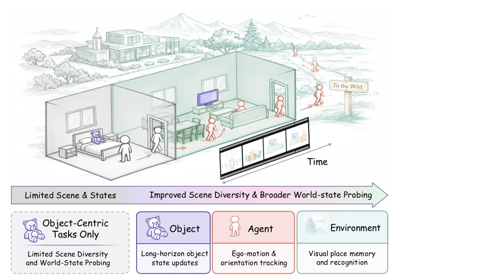
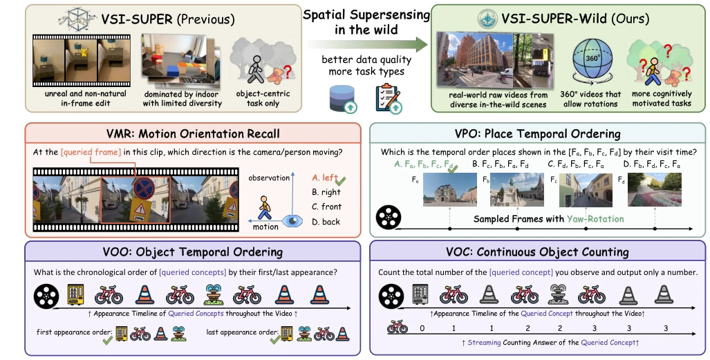
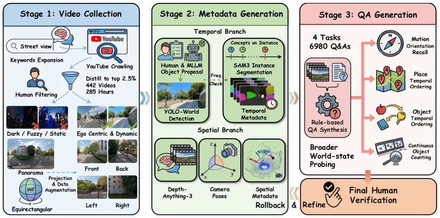
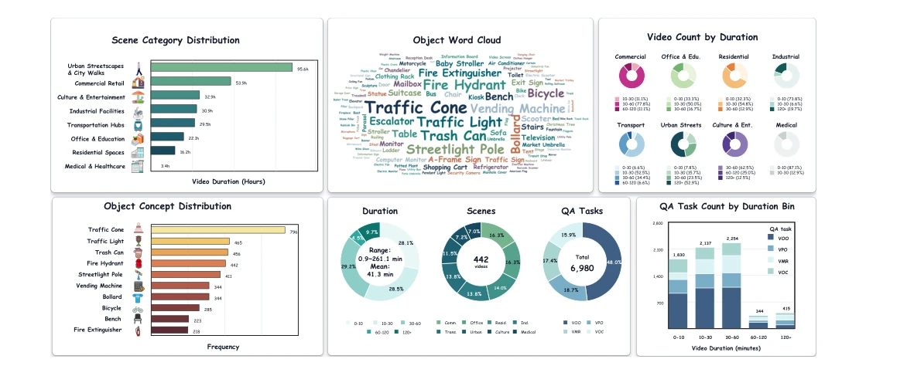
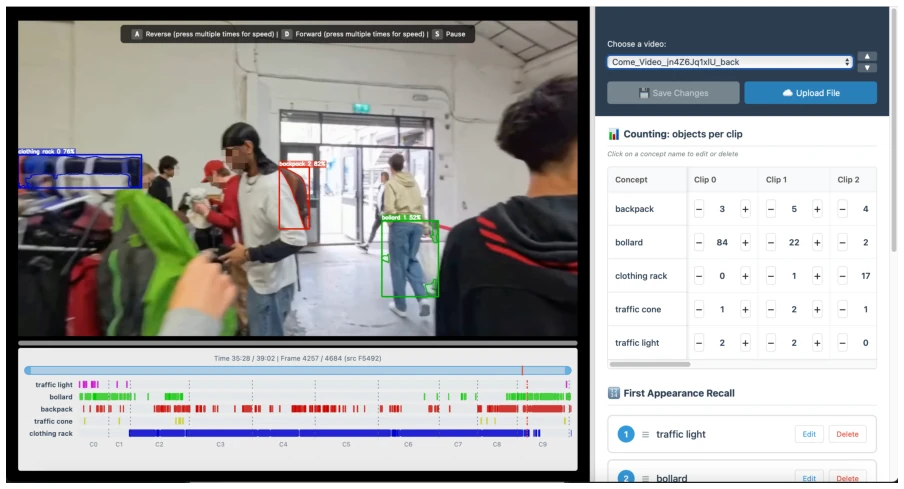
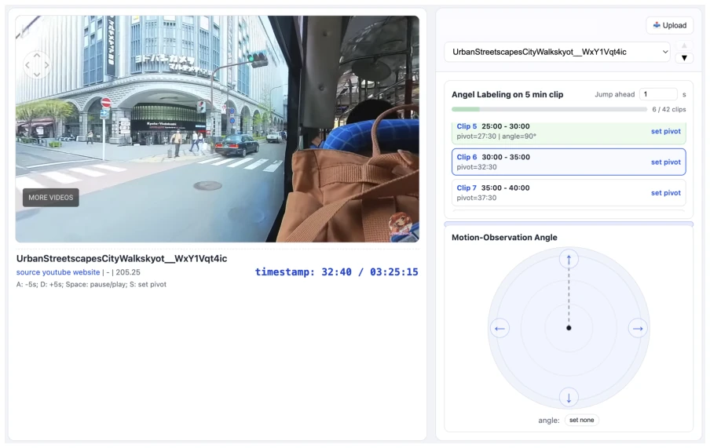
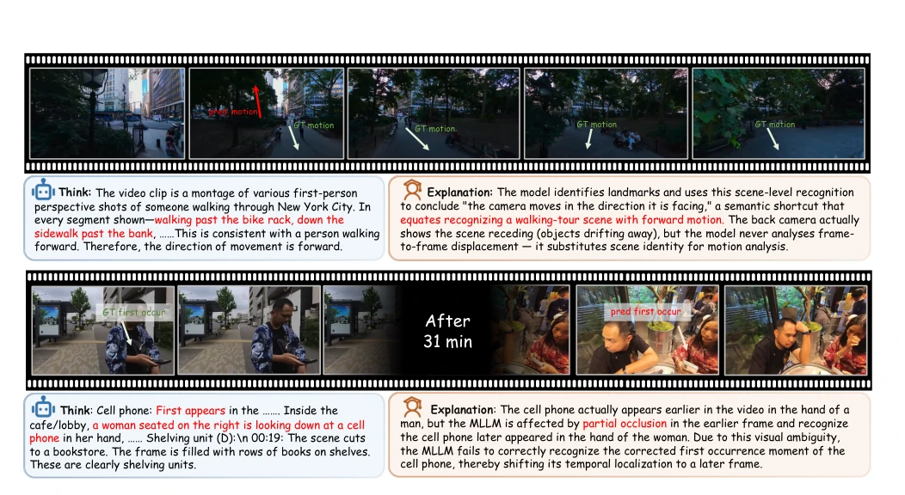
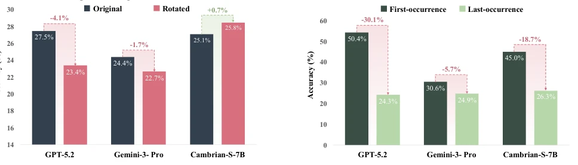
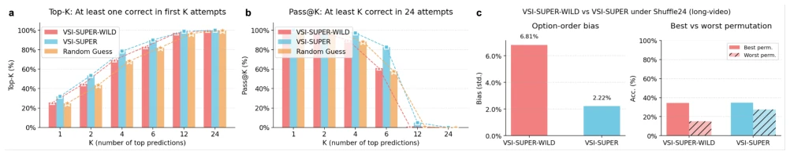
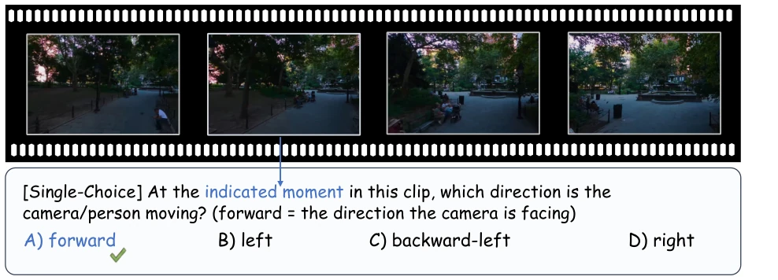

This paper casts a dampener on "spatial super-perception". Although VSI-SUPER previously released a toy version, these Tsinghua-NVIDIA experts directly created a "wilderness survival" test set. It consists of 442 real long videos, unedited and unsynthesized, specifically designed to counter various "semantic shortcuts". The results indicate that 13 mainstream large models collectively underperformed; GPT-5.4 scored only 34 points, largely relying on guessing. The highlight lies in the rigorous task design, incorporating Agent, Object, and Environment for testing, unlike previous approaches focusing solely on objects. The limitations are that although the dataset is real, the evaluation metrics remain conventional, and the model performance is poor, indicating a vast gap from true world models. However, it at least proves that "fake videos" cannot measure true capability; this benchmark serves as a reminder to the industry: do not merely compete within synthetic data.
Existing spatial super-perception research (e.g., VSI-SUPER [60]) has obvious shortcomings. First, data are mostly synthetic videos, spliced from random short clips, lacking the continuity and diversity of the real world [60]. Second, scenes are limited to indoor homes, unable to reflect complex outdoor environments. Most critically, evaluation focuses too much on object-centric, ignoring Agent (observer) and Environment (environment layout) state modeling. Cognitive science points out that human spatial cognition is built around three anchors: Agent, Object, Environment [8], but existing benchmarks do not cover this. This leads to models potentially cheating via frame-level semantic matching, rather than truly building implicit 3D world models. Therefore, it is necessary to introduce real long videos and full-state evaluation to test whether MLLMs possess true spatiotemporal reasoning capabilities.

Figure 1. We advance spatial supersensing beyond household object modeling to world modeling across three anchors—agent, object, environment—using long-form, in-the-wild videos from diverse real-world scenes.

Figure 2. Overview of VSI-SUPER-WILD. We extend spatial supersensing from synthetic indoor scenes to real-world, 360° outdoor environments with better data quality and more task types. Our benchmark probes the agent-object-environment triad through four tasks: VMR (motion orientation recall), VPO (place temporal ordering), VOO (object temporal ordering), and VOC (continuous object count- ing). Together, these tasks demand coherent world modeling across diverse, unconstrained scenarios.
The overall construction process includes three stages: video collection, metadata generation, and QA generation, supplemented by manual verification. Video collection obtains 8 types of real panoramic videos from YouTube, retains first-person dynamic clips after manual screening, and projects them into four-view independent inputs. Metadata generation uses YOLO-World and SAM3 to extract object timestamps, combined with Depth-Anything-3 to estimate camera pose. QA generation builds four types of tasks based on rules: VMR tests Agent motion direction, VPO tests environment location order, VOO tests object appearance order, VOC tests continuous counting. The innovation lies in abandoning synthetic data, adopting real long videos (longest over 4 hours), and designing multi-anchor tasks based on cognitive science, forcing models to maintain a unified world state over long time domains, rather than relying on single-frame features. In addition, a human-in-the-loop verification interface (Fig 8, 9) is introduced to ensure spatiotemporal metadata accuracy and prevent models from exploiting data loopholes to cheat.

Figure 3. Data construction pipeline of VSI-SUPER-WILD. We design a semi-automatic pipeline including video collection, metadata generation, Q&A generation, with human-in-the-loop verification.

Figure 4. Statistics of VSI-SUPER-WILD. The figure reports scene-category duration statistics, object-frequency statistics from VOO/VOC tasks, video-count distributions over duration bins for each scene category, object-concept frequencies, overall single-video duration and QA task distributions, and QA task counts by duration bin. Question-Answer Pairs. Our pipeline yielded a total of 6,980 high-quality Q&A pairs. To ensure a comprehensive evaluation of the agent-object-environment triad, the ques- tions are distributed across the four proposed tasks: VMR (1,215 pairs), VPO (1,302 pairs), VOO (3,350 pairs), and VOC (1,113 pairs). The VOO split contains two balanced subtypes, with 1,675 first-appearance recall questions and 1,675 last-appearance recall questions. Furthermore, we strictly c

Figure 8. Verification interface for temporal metadata used in VOO and VOC. The interface displays SAM3-generated object masks, timeline visualizations of object instances, and an appearance-order adjustment module, allowing annotators to revise automatically gen- erated temporal metadata rather than annotate samples from scratch.

Figure 9. Verification interface for spatial metadata used in VMR. The interface presents the video, clip-level metadata, and a compass- like orientation tool, enabling annotators to verify and revise generated motion directions through a human-in-the-loop quality-control process.
Evaluated 13 mainstream MLLMs on VSI-SUPER-WILD, including GPT-5.4, Gemini-3.1-Pro, and open-source models. Metrics are accuracy (MC tasks) and MRA (counting tasks). Results show that the strongest model Gemini-3.1-Pro scored only 44.36% in total, with most models close to random guessing. Performance decreases significantly with increasing video duration; long videos (120+ minutes) average score drops to 26.3%. Differences between tasks are obvious; object-centric tasks (VOO) perform better than Agent and environment tasks (VMR/VPO). Error analysis reveals four major patterns: spatial collapse (viewpoint change failure), semantic shortcuts (relying on frame-level semantics), insufficient update (unable to update state with new evidence), instance confusion (tracking failure under occlusion). Shuffle24 evaluation further proves the dataset difficulty is high and option order sensitive. This proves current models lack stable spatiotemporal representations.

Figure 5. Top (semantic shortcut): The model predicts that the observer is moving forward based on frame-level semantic cues (e.g., a typical walking-tour street scene), rather than inferring motion from spatiotemporal evidence across frames. Bottom (instance confusion): Under visual challenges such as motion blur and partial occlusion in the wild, the model misses an earlier appearance of the queried object, leading to an incorrect first-occurrence prediction and unstable instance-level tracking over time.

Figure 6. Left (spatial collapse): We compare VPO accuracy between original and rotated views to test whether models can recognize the same place under viewpoint changes. The drop after rotation suggests that models fail to model a consistent world state after changing views despite the spatially unchanged location. Right (insufficient update): We compare VOO accuracy between first- and last-occurrence ordering. The lower performance on last-occurrence queries indicates that models struggle to update world states as later evidence arrives.

Figure 7. VSI-SUPER-WILD vs. VSI-SUPER under Shuffle24 (long-video). (a) Top-K: fraction of questions with at least one correct in the first K attempts. (b) Pass@K: fraction with at least K correct in 24 attempts. (c) Option-order bias: standard deviation of accuracy across 24 option permutations, and best vs. worst permutation accuracy. VSI-SUPER-WILD shows lower Top-K and Pass@K, higher bias, and a larger best–worst gap than VSI-SUPER, confirming it is more challenging and that Shuffle24 evaluation is essential.

Figure 10. Example of the VMR task. Given a frame from a first-person video stream, the model must infer the ego-motion direction of the camera relative to its viewing orientation. The correct answer is determined by analyzing perspective changes and object displacement across the temporal context.